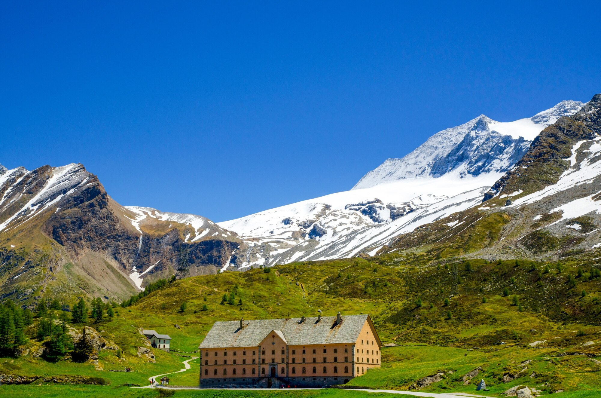

Graphics
Engagement Questions
What kind of photos are good to encode using JPEG?
A good picture for encoding in JPEG might be the one with a real scene that has a lot of color and details: a landscape, a portrait of someone, everyday scenes.
What kind of photos are good to encode using GIF?
GIFs are great for simple images like cartoons and animations because they handle limited colors well.
What is unique about the PNG format?
What's unique about PNG format is that it is good for cartoons, logos and images with transparency (alpha).
How do you resize your photo to the size it should be displayed?
If you are using Mac, open the photo in Preview and go to Tools 'Adjust Size', while if you are in Windows, you may use either Paint or the Photos app.
Why should you resize photos using photo editing software instead of resizing it using CSS?
If you are resizing photos with editing software it would maintain the image quality. If you do it in CSS, resizing a photo would make the quality of the photo blurry or pixelated.